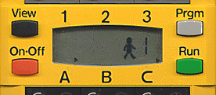

|
|
Start of Tutorial > Start of Trail |

The display on the the upper side of the RCX is more or less the only possibility to
show messages directly to the user (a fact which makes debugging with leJOS rather challenging);
it is able to display up to five numbers or letters.
LCD class offers various methods to access each of these segments or the complete
display area:
Segment interface, e.g.
Segment.BATTERY,Segment.WALKING, Segment.STANDING and so on.
refresh() after setting the segment!
There is a memory saving alternative to the LCD class: the MinLCD
class contains only the public static void setNumber(int aCode,int aValue,int aPoint) and
the refresh() method.
TextLCD class.
It offers methods to write chars or even Strings up to five characters:
examples/performance_test
section of the leJOS tree.
|
|
Start of Tutorial > Start of Trail |